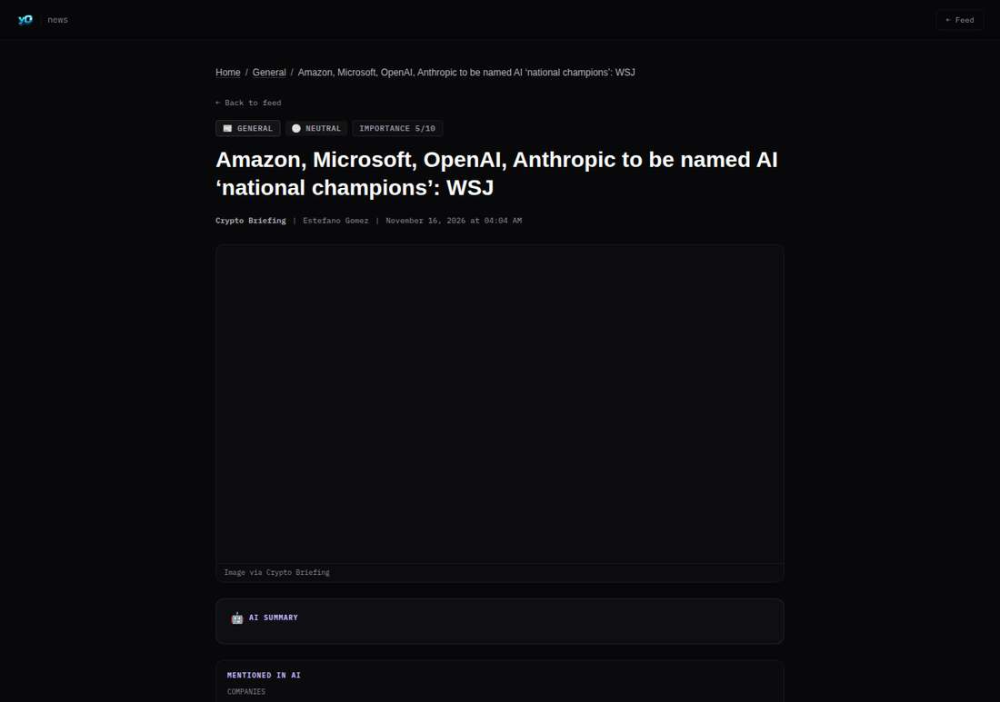

Trump Administration to Name Nvidia, OpenAI and Anthropic Among AI 'National Champions,' WSJ Reports
The Trump administration plans to designate more than two dozen AI companies, including Nvidia, Amazon, Microsoft, OpenAI and Anthropic, as US 'national champions,' the Wall Street Journal reported Sunday. The announcement is expected within the next week from Commerce Secretary Howard Lutnick, bringing expedited export licenses, overseas government support and federal financing; Reuters relayed the report and said it could not immediately verify it.
- 01THE PROGRAM — The Commerce Department program, announced about a year ago, offers designated companies expedited approvals for licenses to export chips and other technology, government support for their work overseas, and access to federal financing, according to the department's program website cited by the Journal.
- 02THE NAMES — Nvidia, Amazon, Microsoft, OpenAI and Anthropic are among the more than two dozen companies set to be named; Commerce Secretary Howard Lutnick is expected to announce the plan within the next week, though the date could still slip.
- 03THE AIM — The goal is to package US chips, models and other AI products so foreign customers can purchase them together, and to get foreign companies and countries to adopt American AI technology over Chinese rivals.
WHAT HAPPENEDWhat Happened
The Trump administration plans to designate more than two dozen artificial intelligence companies as US "national champions," including Nvidia, Amazon, Microsoft, OpenAI and Anthropic, the Wall Street Journal reported on Sunday, citing people familiar with the plans. The announcement is expected within the next week, with Commerce Secretary Howard Lutnick expected to make it, though the date could still slip.
Designation brings concrete advantages, according to the Commerce Department's website for the program, cited by the Journal: expedited approvals for licenses to export chips and other technology, government support for the companies' work overseas, and access to federal financing. The goal is to package US chips, models and other AI products so that customers in other countries can purchase them together, and to get foreign companies and countries to adopt American AI technology over Chinese rivals.
The program itself was initially announced about a year ago, but the champions had not been named until now. The announcement is expected to proceed despite the turmoil around Nvidia, whose chief executive Jensen Huang resigned on November 12; the Journal notes the administration is pressing ahead with its technology strategy regardless. Lutnick had previously been reluctant to anger China during trade talks, the Journal has reported.
WHY IT MATTERSA formal industrial-policy stamp on the AI stack
The designation turns informal White House backing into tangible advantages: faster export licenses, financing, and diplomatic support for the companies that already anchor the stack, from Nvidia's chips to Amazon's and Microsoft's cloud to OpenAI's and Anthropic's models. The timing is the signal. The announcement is being lined up days after Huang's shock resignation and days before Nvidia's third-quarter earnings and Anthropic's market debut, which tells foreign buyers the administration's AI strategy does not pause for a leadership vacuum at its most important chip supplier.
Anthropic's inclusion is notable. Earlier this year the administration moved to end government use of Anthropic's models in a dispute over Pentagon guardrails, the Journal reported at the time. Naming the company a champion now suggests the export agenda overrides that dispute, and that the administration wants the full frontier-model bench, not just its friendliest lab, carrying the flag overseas.
WHAT TO WATCHThe list, the date, and Beijing's response
Three things decide whether this is policy or branding. First, whether Lutnick announces within the week or the date slips, as the Journal's sources say it could. Second, the full roster beyond the five names reported so far: a list that stops at the obvious giants says less than one that reaches into the infrastructure and robotics layers. Third, whether expedited export licensing changes actual chip flows to third countries, and how Beijing responds to a program whose stated aim is steering foreign buyers away from Chinese rivals.
SIGNAL JUDGMENT — ANALYSISIndustrial policy, named at last; the test is whether licenses actually move faster
Tokenta Signal's judgment: the program itself is a year old, so the news is the naming, not the idea, and the naming puts the administration's stamp on the five companies that already anchor the AI stack. The substance will be measured in export-license timelines and financing, not in the label. Watch the full list and whether the announcement holds its one-week window; a slip, or a list that stops at the obvious five, would say the program is branding first and policy second.
WHAT REMAINS UNCERTAINWhat Remains Uncertain
EVIDENCEEvidence

Reuters' November 16, 2026 account of the Wall Street Journal report: the Trump administration plans to designate more than two dozen AI companies, including Nvidia, Amazon, Microsoft, OpenAI and Anthropic, as US 'national champions,' with the announcement expected within the next week.
PRIMARY SOURCESPrimary Sources
- Reuters: Trump administration to name Nvidia, other AI firms as US 'national champions', WSJ reports
https://www.reuters.com/business/retail-consumer/trump-administration-name-nvidia-other-ai-firms-us-national-champions-wsj-2026-11-16/ - The Wall Street Journal: Trump Administration to Name Nvidia Among AI 'National Champions'
https://www.wsj.com/tech/ai/trump-administration-to-name-nvidia-among-ai-national-champions-c9284344 - y0 News: Amazon, Microsoft, OpenAI, Anthropic to be named AI 'national champions': WSJ
https://news.y0.exchange/article/amazon-microsoft-openai-anthropic-to-be-named-ai-national-champions-wsj